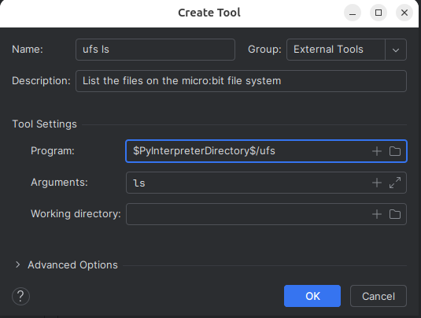

Installing PyCharm
Go to the PyCharm home page and download the latest version of PyCharm Community (or Professional) Edition for your operating system.
After downloading, install PyCharm on your computer and launch it.
Creating A New Project
When you see the following screen appear, select Create New Project.

In the next screen, give your project a name. For this tutorial, I am calling the project pycharm_microbit_demo.

By default, PyCharm uses Python virtual environments and by clicking Create we accept this default. If you are unfamiliar with virtual environments, essentially, a virtual environment provides a sandbox for your project. A virtual environment isolates your project from all other project environments, allowing you to tailor your environment to use specific versions of Python libraries without having adverse affects on other projects.
PyCharm automatically creates and manages the virtual environment for you, so once the project is created, you can all but forget you are in a virtual environment. You can read more about virtual environments here.
After hitting the Create button, within a few moments you should see a new project screen similar to this:

Viewing The Toolbar
For convenience, let's expose the Toolbar to save a few mouse clicks. Click on View/Toolbar

The toolbar is now exposed at the top of the screen.

Adding A Python File To The Project
Now let's add a Python file that imports and uses the micro:bit MicroPython module and see what happens.
On the left hand side of the screen, under the blue Project banner, right click pycharm_microbit_demo, select New and then Python File

Give the file a name. The .py extension will automatically be added to the name. I am going to call this file demo.
Copy and paste this file into the editor.
ffrom microbit import *
while True:
if button_a.is_pressed():
display.show(Image.YES)
elif button_b.is_pressed():
display.show(Image.NO)
else:
display.show(Image.ASLEEP)
What's with all those wavy red lines?

They are not only ugly, but its PyCharm telling us that we need to fix something. Each of those red lines represents an unresolved reference error. Move your mouse cursor over any of those lines to get an explanation of the error.
Why are there unresolved references? The reason is that PyCharm is not aware of the micro:bit MicroPython API. The module supporting the API is not part of the standard Python library.
To fix that, we need to add the micro:bit MicroPython API definitions to PyCharm. Those definitions are contained in a Python package I created called pseudo-microbit. This is an open source package that anyone can download from the PyPi package management system. We will let PyCharm download and install this package for us.
Making PyCharm micro:bit Aware
Step 1: Click on the Settings icon on the Toolbar.

Step 2: Select Project Interpreter on the left side of the screen and then click the green plus sign to bring up the Install menu.

Step 3: Type pseudo-microbit at the top of the screen and then press the Install Package button at the bottom left of the screen. Wait for the successful install message to appear, then close this window and the settings window to get back to the editor.

All the wavy red lines are gone, and there are no more unresolved references.

And now, as we type in new code, PyCharm will give us type hints.

Select the method or value from the type hint menu and double click to have PyCharm perform code completion for you.
Adding uflash and microfs As External Tools
When we installed pseudo-microbit, two additional packages were automatically added to our virtual environment.
We could run these from the terminal window built into PyCharm, but it would mean having to type in the entire command line manually.
Let's add these utilities as External Tools that we can invoke them with the click of the mouse.
Step 1: Click on the Settings icon again, but this time select Tools/External Tools and click on the green plus.

Step 2: Fill out the Create Tool dialog and click Ok.

Step 3: While we're in this section of the program, let's go ahead and fill out external tool commands for the 4 microfs commands:
-
ls - lists the files in the file system
-
put - places a file into the file system
-
get - retrieves a file from the file system
-
rm - removes a file from the file system
Note: The microfs utility uses the command name of ufs. For example to run the ls command on a command line, you would type: ufs ls
Let's continue with creating the External Tool entries. Click on the copy icon.

Step 4: Create an external tool entry for each of the commands. Use the Copy icon for each command.


When your are done, click Apply and then Ok

Note: These external tools are now available globally within PyCharm. When you create your next project, they will already be in place.
Flashing Programs To The micro:bit
To flash a program to the micro:bit, right click on a file name in the Project window, select External Tools, and then select uflash from the context menu.
The file will be flashed to the micro:bit.

Working With The Persistent File System
There are times that you may wish to add functionality to your project that is not part of the standard micro:bit library. To import and gain access to the module, you will need to place the library in the micro:bit persistent file system.
The *servo library * is a prime example of such a module. There are explicit instructions on how to import an external module in the servo distribution. Just click the servo library link to view the instructions.
After copying the servo.py source code from the servo distribution, I created a new directory called external_modules and then placed servo.py in that directory.

To add servo.py to the persistent file system, right click on the file name, select External Tools and then select ufs put.

To make sure that file was added, right click servo.py again, but this time, select ufs ls.

Conclusion
Now that you have configured PyCharm to be micro:bit MicroPython aware, you are now ready to create Python programs for the micro:bit using PyCharm, so try it out!